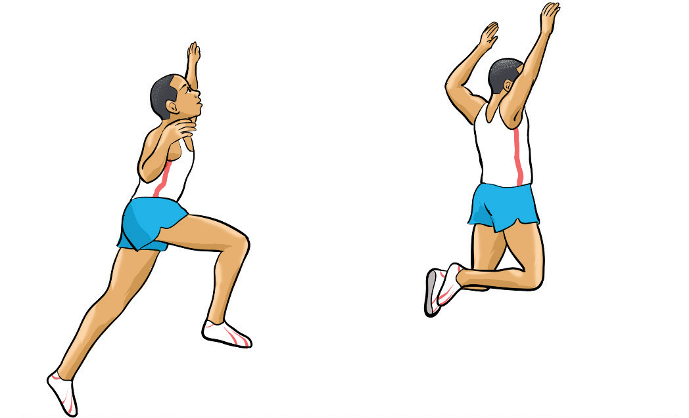
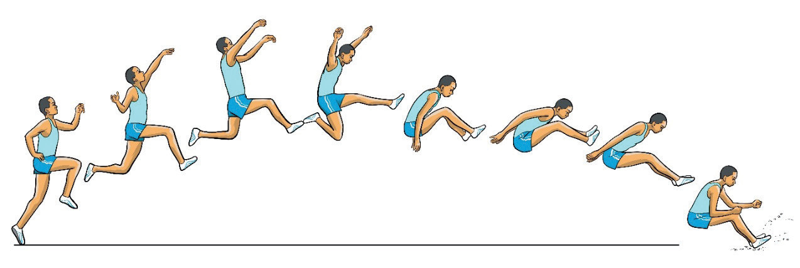

The flight is essential for maintaining control and maximising distance. There are three main techniques that athletes use to stay balanced in the air and prepare for landing. These techniques are the stride, hang and the hitch-kick.
Stride technique
The stride technique involves maintaining the take-off position until landing, where the take-off leg joins the free leg to achieve a proper landing position, as shown in Figure 2.21. The athlete raises the take-off leg and remains in the air until the non-take-off leg joins, allowing for a controlled and effective landing.

Hang technique
This is a flight technique where the athlete remains hanging in the air before landing. The following steps will help you execute an efficient flight: